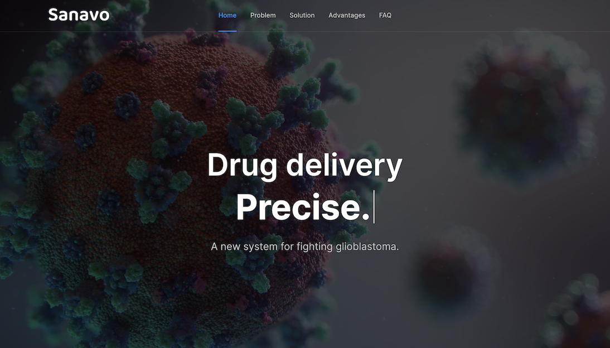
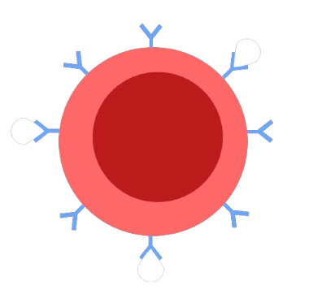

Sanavo
Moonshot Project to improve Brain Cancer Treatment (associated with TKS).

The Sanavo Website
Context & Problem
A moonshot project is an ambitious, exploratory, and often groundbreaking project that seeks to tackle a huge global problem with a radical, sometimes fantastical, solution. At TKS, the capstone project is the global Moonshot Competition: an attempt to use the various skills we had learned to tackle real-world problems - problems that affected humanity and its communities as a whole, not challenges faced by large businesses such as Microsoft or Google.
My team, Mark, Natan, and I, approached this task with a simple question: what was the MOST deadly disease, and how could we solve it? That's how we came up with Sanavo. We narrowed into glioblastoma, the most deadly of the brain cancers, which are one of the worst types of cancers overall. As for the word Sanavo, it's derived from the Latin verb "Sanare", meaning "to heal".
Glioblastoma, is, in essence, a death sentence. 95% of patients die within 5 years of diagnosis: current treatments are ineffective. While surgery is often useful to remove large portions of a tumour, around 3% of cancer cells remain post-operation. This is normal and expected; a surgeon can only do so much in the delicate tissues of the brain, and the remaining cancer cells are often indistinguishable from normal cells. Think of mixing two different colours of play-doh and then trying to remove one with a knife - some portions will remain.
However, post-surgery treaments, namely chemotherapy and radiotherapy, are ineffective, side-effect heavy, and expensive. Tumour regrowth occurs fast and in a vast majority of cases. The main reason is the Blood Brain Barrier: a membrane that physically separates fluid in the brain from blood vessels. We evolved with these structures to protect the brain from toxins in the blood, but chemotherapy drugs are also inadvertently blocked from entering the brain and attacking the tumour. Furthermore, since chemotherapy drugs such as TMZ work by targeting cells with high rates of division (such as cancer cells), other cells which are naturally fast-replicating also suffer. These include intestine and mouth lining, and famously hair cells. As for radiotherapy, it has its own host of side effects: headaches, nausea, vomiting, hearing loss, seizures, and more.

Diagram of Hydrogel Drug Carrier.
Solution 1: Hydrogel Carrier attached to Red Blood Cells
The problem with glioblastoma treatment isn't the ineffiency of the drugs: it's getting the drugs to the cancer site, and that's where our solution steps in.
By diving into and combining several cutting-edge research topics, we ideated the Hyaluronic Acid hydrogel as an ideal drug carrier molecule. Its benefits include:
- • Hydrophilic i.e. highly biocompatible, biodegradable, and high loading capacity.
- • Small (can cross the Blood-Brain Barrier easily), versatile.
- • Can protect molecules from degradation by enzymes.
- • High affinity to the CD44 receptor, which is often over-expressed in cancer cells.
These factors together make Hyaluronic acid the ideal drug carrier, one which is non-toxic, has a high capacity, programmed to release near cancer cells, and can safely bio-degrade after releasing its cargo. In the diagram above, the blue particles represent the cargo (chemotherapy drugs, likely TMZ) and the antibody-like attachments are HA6 monosaccharide units, which can bind to cancer cells' CD44 receptors.
However, while hydrogels can naturally cross the Blood Brain Barrier, this process is slow and unlikely. Here, we took advantage of one of the best natural carriers in our body: the Red Blood Cells, which cross the Barrier regularly to deliver oxygen. This process is known as Red Blood Cell hitchhiking. The drug-laced nanogels bind to Red Blood Cells ex vivo, and then injected into the spinal bloodstream, which delivers blood directly into the brain. The RBCs carry the hydrogel past the Blood Brain Barrier, the hydrogels bind to cancer cells and release their cargo, thus reducing side effects and improving treatment efficacy.

Diagram of Bio-Sensor.
Solution 2: PLGA Bio-Sensor to combat Tumor Recurrence
The final challenge with glioblastoma is its extremely high rate of recurrence, with almost 100% of patients experiencing various levels of tumour regrowth after all types of treatments. Furthermore, current imaging techniques, such as ultrasound, X-Ray, CT, MRI, and PET scans often struggle with specificity and sensitivity, which makes timely treatment difficult. Thus, we developed a Poly(lactic-co-glycolic acid) (PLGA) biosensor as the second part of our solution.
The delivery of our new molecule is the same as above: Red Blood Cell hitchhiking inside a nanogel. This copies the same advantages: biocompatibility, biodegradability, ability to cross the Blood Brain Barrier, and targeted release near cancer cells specifically.
The chemistry of our new molecule is as follows: within the PLGA core lies Glucose Oxidase, which reacts to the excessive glucose present near cancer cells. This generates hydrogen peroxide, which activates Cy7, a fluorophore molecule also contained within the PLGA core. The activated Cy7 has increased fluorescence which can be picked up very accurately with a NIR (Near Infrared) scan of the brain.
The image above depicts PLGA nanogels binding to the CD47 proteins on Red Blood Cells. This sends a "don't eat me" signal that temporarily stops macrophages removing the Red Blood Cells from circulation.
This improved imaging technique allows doctors to notice tumour recurrence earlier and start treatment earlier. Combined with our more effective drug delivery system, this could greatly improve treatment efficacy, reduce side effects, and reduce costs. To know more about how this method would be cheaper, or to go far deeper into the technical explanation, or to understand the competition in this industry, check out the links below.